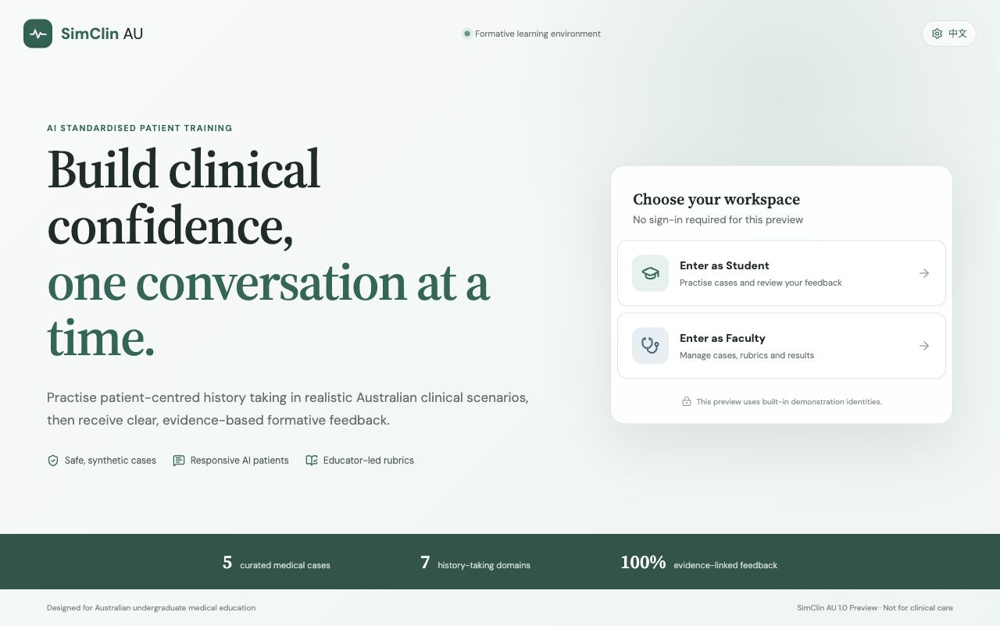
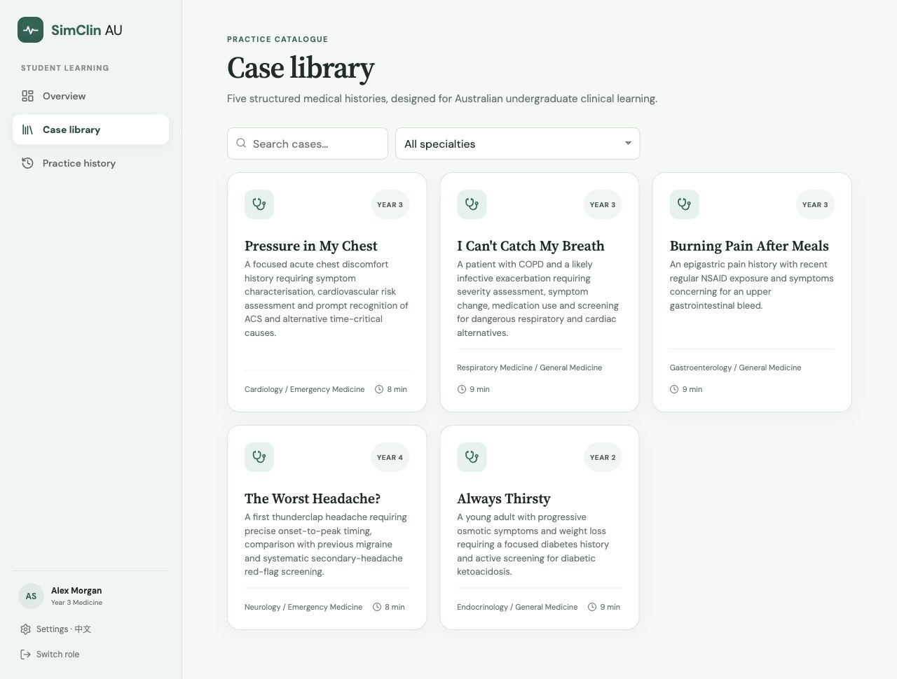
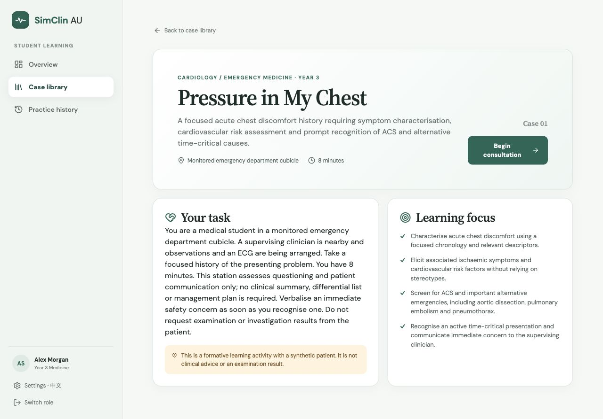
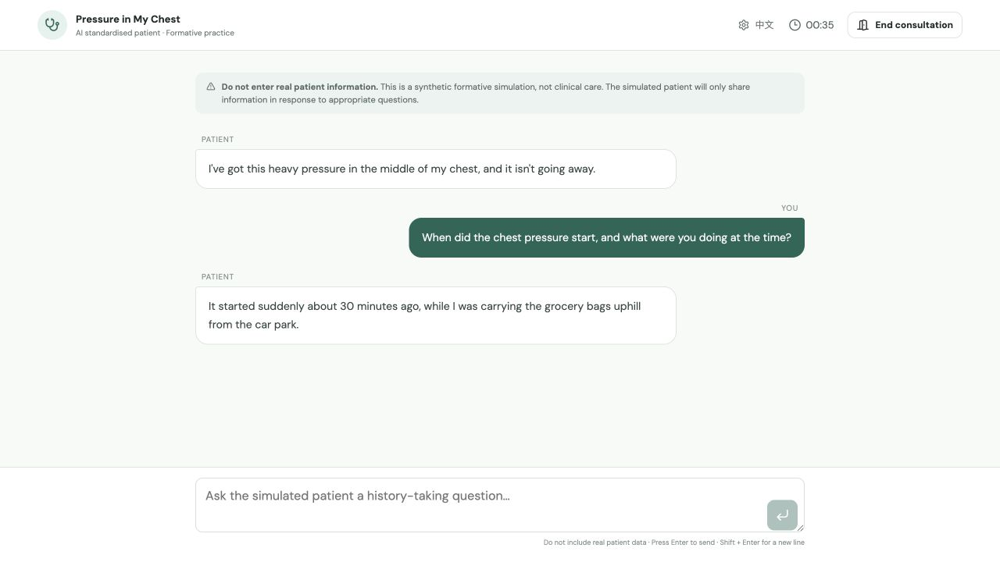
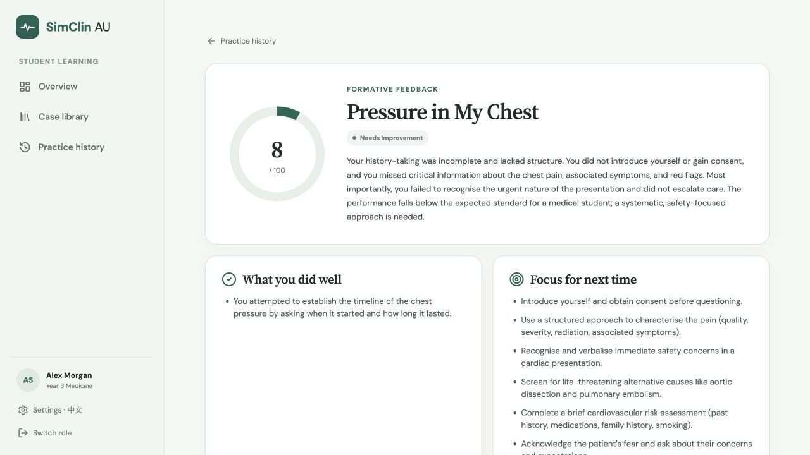
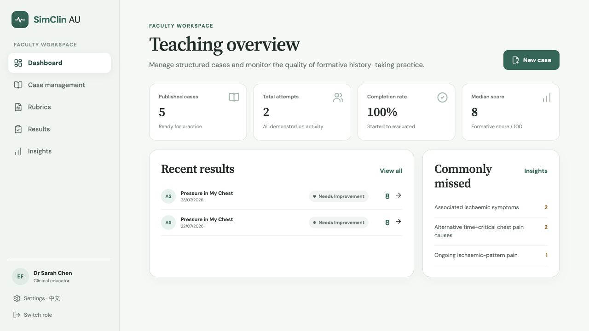
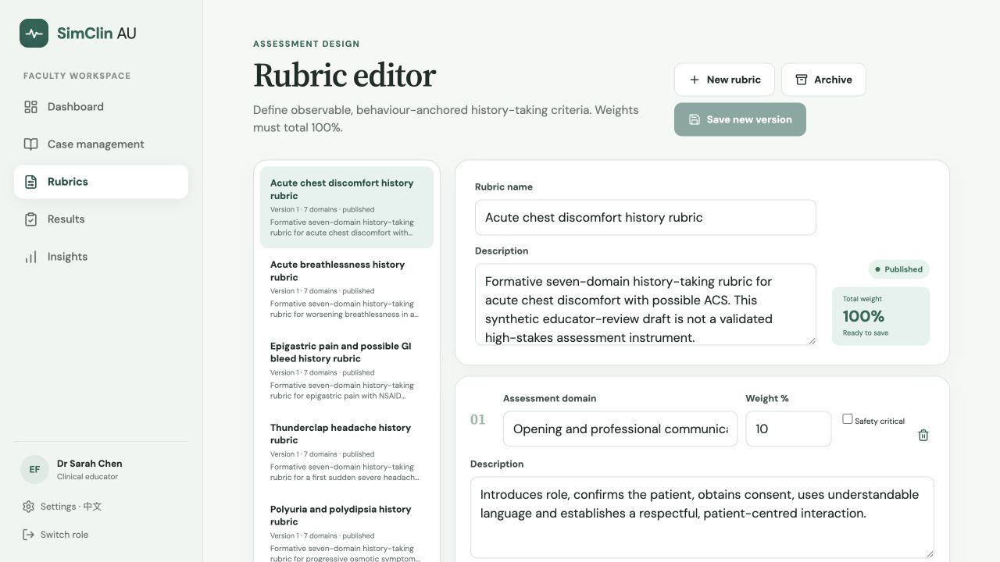
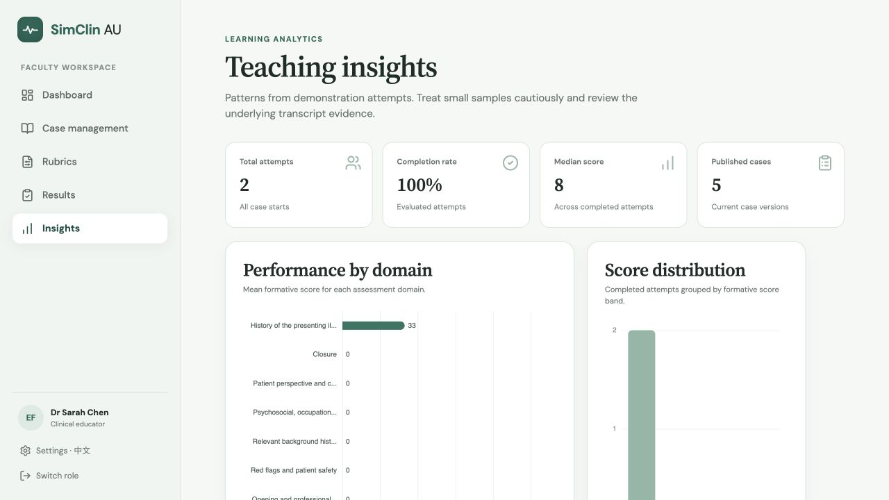

Choose a case
Five internal-medicine-led scenarios with clear learning focus, timebox and safety boundaries.
AI standardised patient training
SimClin AU turns history-taking practice into a safe, repeatable learning loop for Australian undergraduate medical education.

The learning loop
Every screen is designed to keep the learner focused on patient-centred history taking — then make the next improvement obvious.
Five internal-medicine-led scenarios with clear learning focus, timebox and safety boundaries.
A streaming AI standardised patient responds only to appropriate history-taking questions.
A transcript-aware evaluation highlights strengths, missed safety questions and focused goals.
Practice history keeps the learning cycle visible without turning formative feedback into a high-stakes grade.
Inside the student experience
The product keeps instructions, clinical boundaries and feedback close to the learner — without distracting from the patient.



Evidence-linked formative feedback
Instead of a single opaque score, students see what was covered, what was missed and which safety-critical questions deserve another attempt.

For clinical educators
The faculty workspace connects case design, rubric governance, transcript review and cohort-level insight in one place.



Designed for the Australian context
SimClin AU is a formative training prototype. Its clinical structure is explicit, its synthetic boundary is visible, and educator review remains part of the loop.
Synthetic cases, no real student accounts, no clinical-care claims and visible safety prompts.
Scores are tied to transcript turns, rubric domains and stable case facts instead of an untraceable model opinion.
Educators can inspect results, adjust scores with an audit reason and evolve cases and rubrics over time.
Open-source preview
SimClin AU 1.0 is built with Vue, Fastify, SQLite and server-side DeepSeek integration. The repository includes the architecture, prompt design, tests and deployment notes.